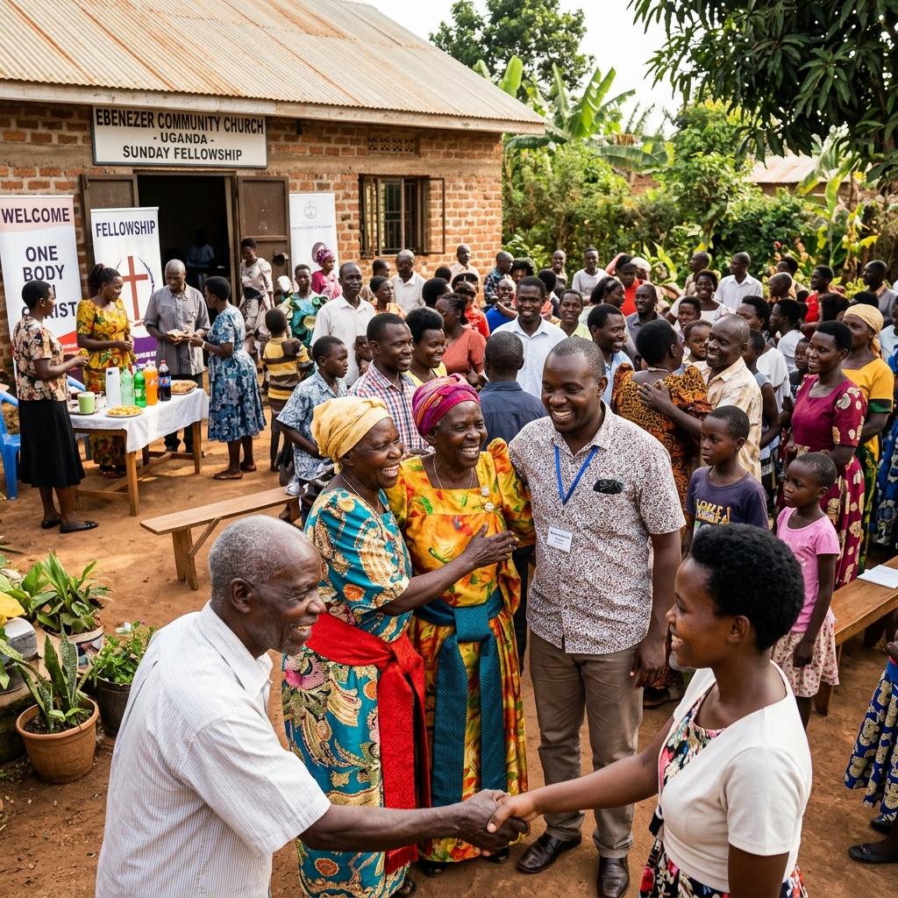
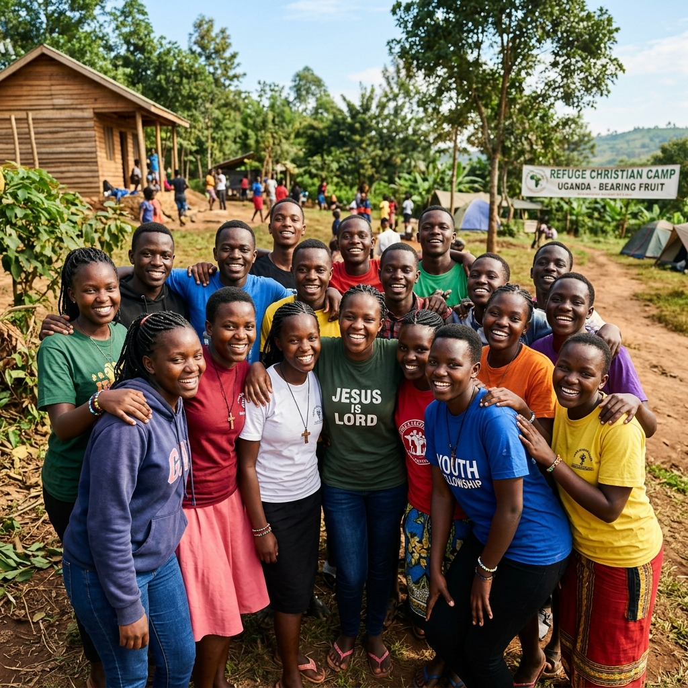
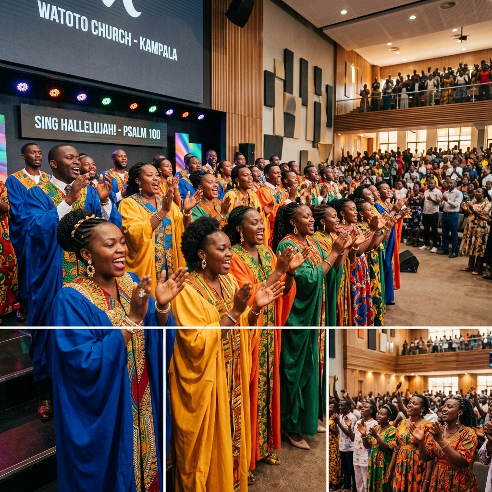

A Christian digital media and broadcasting platform dedicated to sharing the Gospel of Jesus Christ through modern technology — reaching Uganda, Africa, and beyond.
To become East Africa's leading Christian digital media network, bringing hope, truth, and transformation through innovative, Christ-centered media.
To create and distribute high-quality, faith-driven digital content that spreads the Gospel of Jesus Christ, nurtures spiritual growth, promotes healthy living, and inspires positive change across communities.
Spreading the Gospel Through Digital Media.
Excellence, integrity, innovation, and faith are at the heart of everything we do.
Amazing Media Uganda is a Christian digital media and broadcasting platform dedicated to sharing the Gospel of Jesus Christ through modern technology. Based in Kampala, Uganda, we exist to inspire hope, strengthen faith, and positively impact lives by creating high-quality, Bible-centered content that reaches people wherever they are.
We believe that digital media is one of the most powerful tools for evangelism in today's world. Through compelling storytelling, inspiring worship, biblical teaching, documentaries, health education, and family-focused programming, we connect timeless Christian values with today's generation across Uganda, Africa, and beyond.
Our content is available through our official website, YouTube, Facebook, TikTok, and other digital platforms — making the message of Christ accessible anytime, anywhere. Whether you are seeking spiritual encouragement, practical health insights, uplifting music, or inspiring stories of faith, Amazing Media Uganda is committed to producing content that informs, educates, and transforms lives.

Beyond broadcasting, we partner with churches, ministries, organizations, and communities to amplify the Gospel through professional media production and creative storytelling.
Professional livestream production of church services, gospel events, and community programmes across Uganda and East Africa.
Creating and distributing uplifting gospel music, worship sessions, and choir recordings that bring praise to every screen.
Partnering with churches and ministries on evangelism, health education, family programming, and community transformation projects.
Recording, editing, and distributing powerful Bible-centered sermons, teachings, and devotionals across all digital platforms.
Producing content that promotes healthy living, strong families, and positive societal change grounded in Christian values.
Equipping believers and young creatives with professional media production skills to tell the story of Jesus with excellence.
We believe in the Holy Trinity — God the Father, God the Son (Jesus Christ), and God the Holy Spirit. We believe in the authority and sufficiency of the Holy Scriptures, salvation by grace through faith in Jesus Christ, the bodily resurrection of Christ, the fellowship of all believers, and His soon return. At Amazing Media Uganda, we are passionate about using every available digital platform to proclaim the love of Jesus Christ and prepare hearts for His soon return.
Your prayers, volunteer services, and partnerships keep this ministry growing. Together, we can carry the message of hope, truth, and transformation to Uganda and beyond through the power of digital media.
The dedicated servants guiding the message, operations, and community care at Amazing Media Uganda.

Pastor Samuel oversees the theological direction and vision of Amazing Media Uganda, sharing over 15 years of pastoral ministry.

Sarah handles livestream broadcasting, video productions, and web presence, connecting technology with worship.

David directs our praise ministries and coordinates village outreach programs, bringing songs and hope to communities.